imageinfo
Perfil del sistema (Win7SP1x64) y fecha/hora de captura.
Actividad 17 · Tercer parcial · Análisis forense de memoria volátil
Análisis de un volcado de memoria de 2 GB de un equipo Windows 7 x64 con Volatility Framework 2.6 desde Kali Linux. Se identificaron la contraseña del sospechoso, el nombre del equipo, los procesos maliciosos, un servidor externo en Londres, los correos de ingeniería social y la cartera Bitcoin de un ransomware.
01 / OBJETIVO Y ALCANCE
La memoria volátil conserva procesos en ejecución, conexiones de red, contraseñas descifradas y datos de malware que solo existen mientras el equipo está encendido. El objetivo fue extraer de un volcado RAM la evidencia que vinculara el equipo con las hipótesis de un caso de ciberdelincuencia (alias "Morty" y "Ricky", iniciales FAF3/TFE, servidores Lunar, servicios Torrent y cobro en criptomoneda).
02 / METODOLOGÍA
Perfil del sistema (Win7SP1x64) y fecha/hora de captura.
Hashes NTLM de las cuentas y secretos LSA descifrados (DefaultPassword).
Conexiones de red, hives del registro y lectura de la clave ComputerName.
Árbol de procesos, archivos en memoria y volcado de procesos para buscar cadenas con strings y grep.
03 / RESULTADOS
P1 · Hora local del volcado2018-08-04 22:34:22 +0300 (19:34:22 UTC)
P2 · Sistema operativoWindows 7 SP1 x64 (Win7SP1x64)
P3 · Contraseña (usuario Rick)MortyIsReallyAnOtter
P4 · IP del sistema local192.168.202.131
P5 · RegistroSYSTEM, SAM, SECURITY, SOFTWARE, NTUSER.DAT de Rick
P6 · Nombre del equipoWIN-LO6FAF3DTFE
P7 · ProcesosRick And Morty.exe (3820) · vmware-tray.exe (3720) · BitTorrent.exe (2836)
P8 · Servidor malicioso77.102.199.102:7575 — Londres, Reino Unido (Virgin Media)
P9 · Correosrickopicko@mail.com · rickypinky@mail.com · guerrillamail.com — Chrome
P10 · Cartera Bitcoin1MmpEmebJkqXG8nQv4cjJSmxZQFVmFo63M
btcblack.it — ERROR 404El servicio de listas negras indicado en la actividad ya no está disponible, por lo que la verificación no pudo realizarse; se propone usar servicios vigentes como Chainabuse y un explorador de bloques.
04 / ANÁLISIS
El nombre del equipo WIN-LO6FAF3DTFE contiene las iniciales FAF3 y TFE aportadas por inteligencia; la contraseña MortyIsReallyAnOtter enlaza al usuario con el alias "Morty"; los correos ricko/rickypinky coinciden con "Ricky". El árbol de procesos muestra que un falso episodio descargado por BitTorrent (Rick And Morty.exe) lanzó un ransomware disfrazado de utilidad de VMware que exige 0.16 BTC, mientras LunarMS.exe se comunicaba con un servidor residencial en Londres. No se encontraron en memoria rastros de Telegram, Reddit ni del grupo "S0_Just_M0v3_Socy", que quedan como líneas de investigación junto con el rastreo de la cartera y las solicitudes al ISP y a mail.com.
05 / EVIDENCIAS
Cada captura incluye el comando ejecutado y su salida, en el orden del cuestionario.
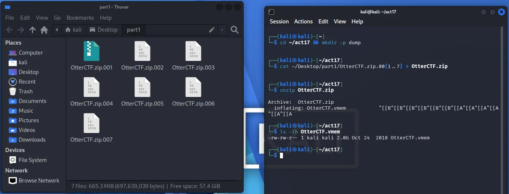
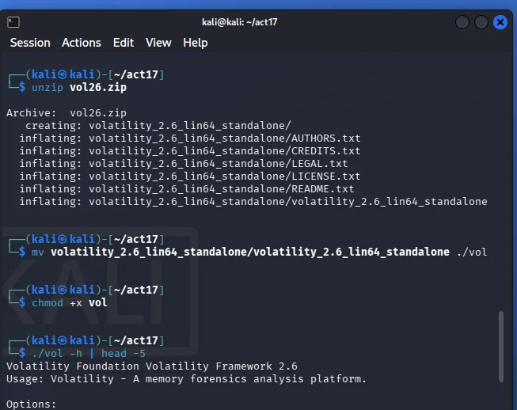
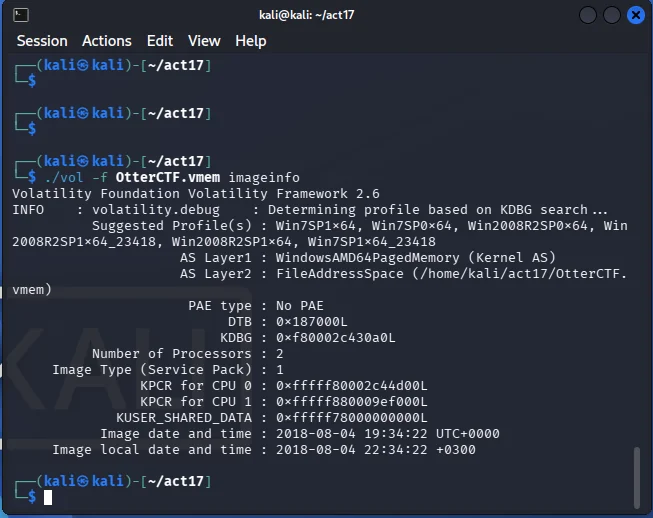
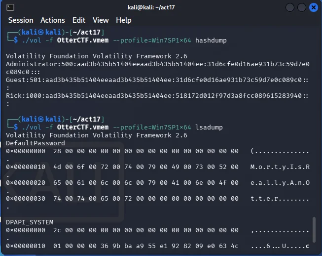
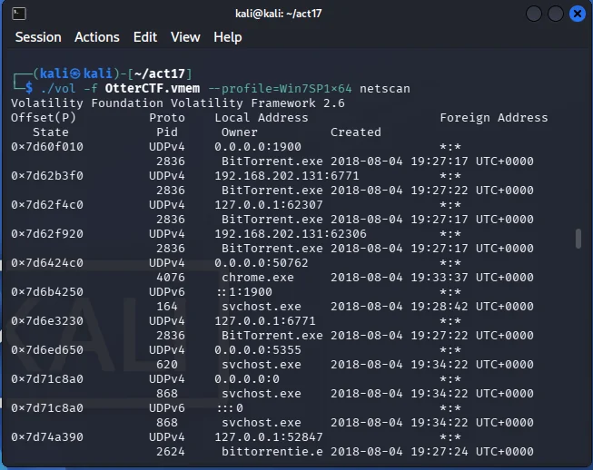
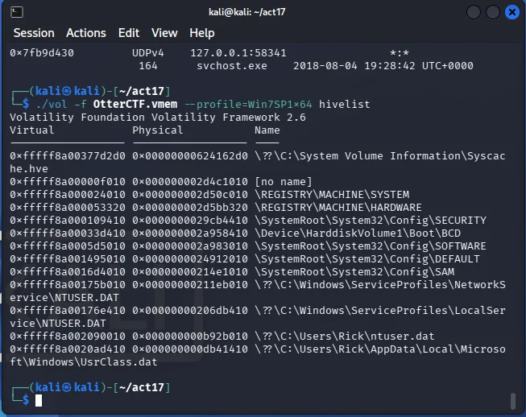
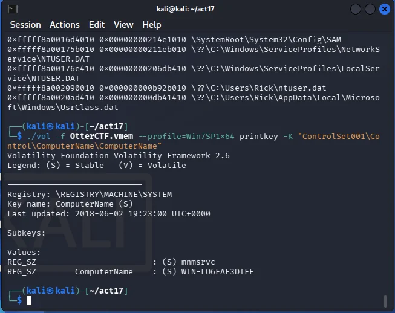
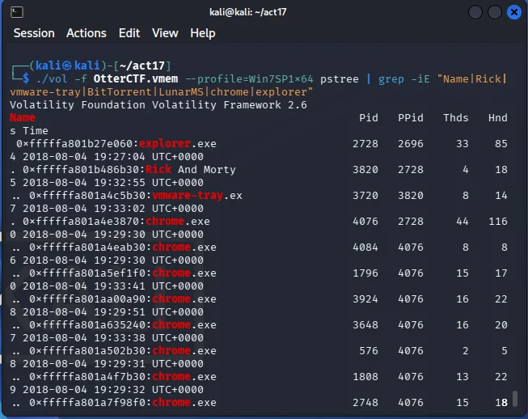
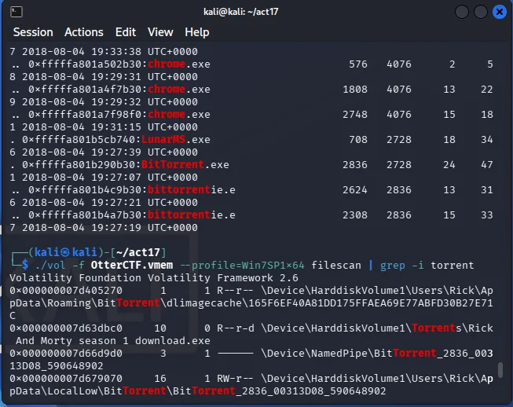
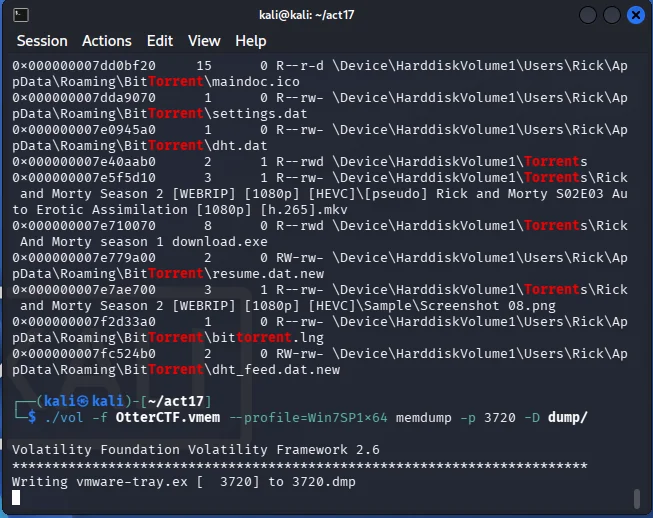
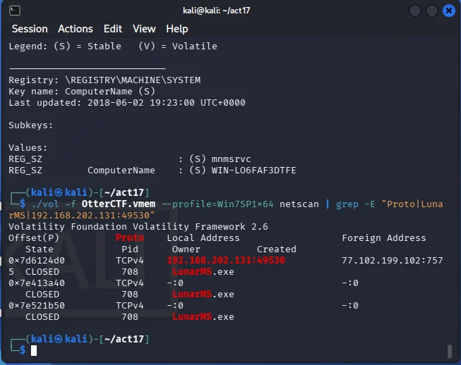
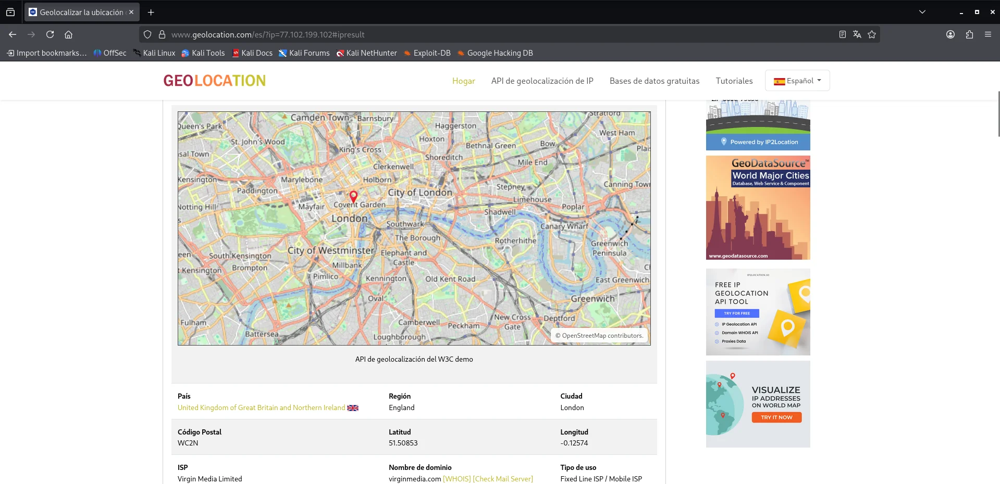
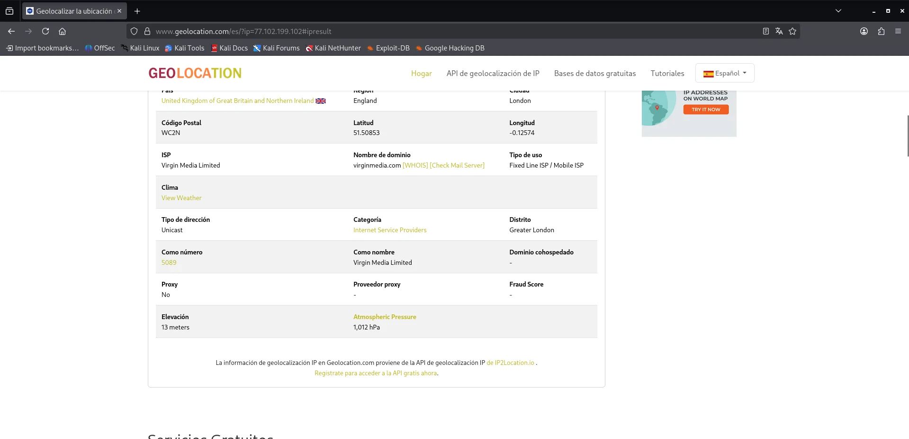
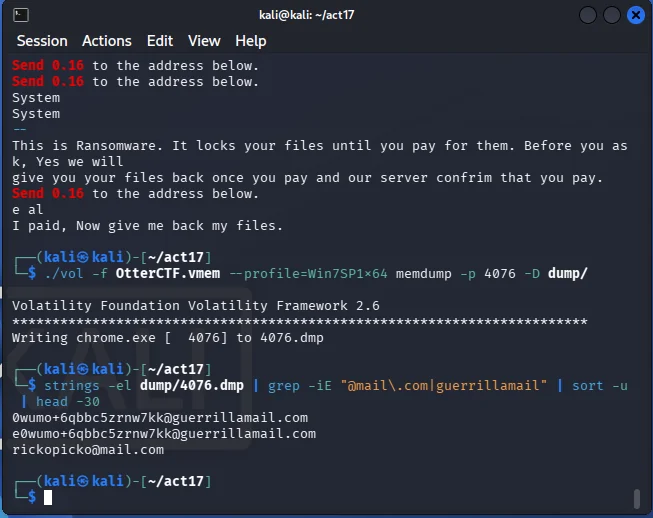
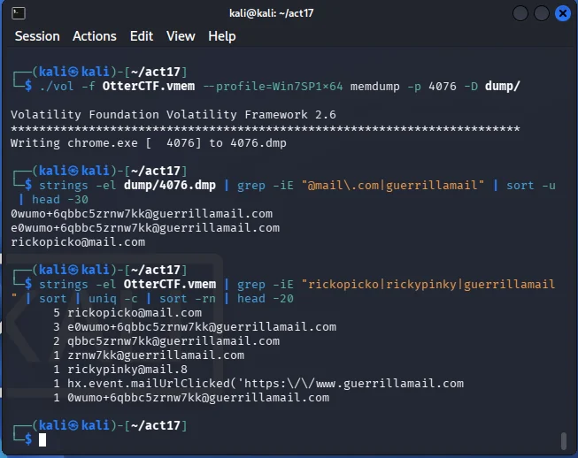
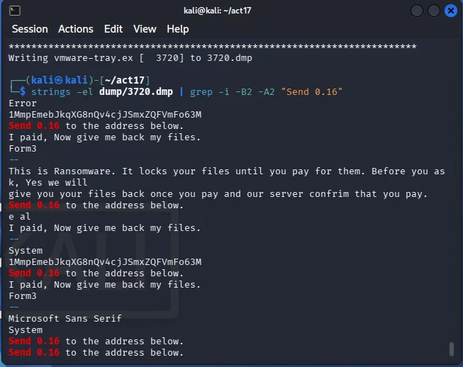
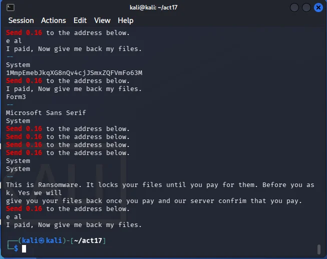
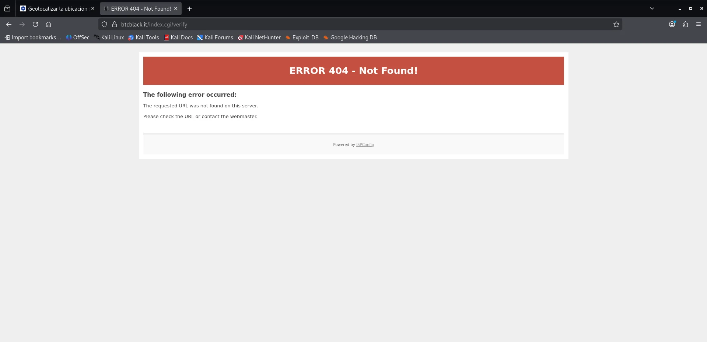
06 / ARCHIVOS ENTREGABLES
07 / CONCLUSIÓN
Un solo archivo de memoria permitió reconstruir la identidad del equipo, la cuenta y contraseña del sospechoso, su actividad en red, sus correos y el mecanismo de extorsión. Buena parte de esa información —la contraseña descifrada, la nota de rescate dentro de un proceso disfrazado, conexiones ya cerradas— no existe en el disco: por eso la RAM debe adquirirse primero.